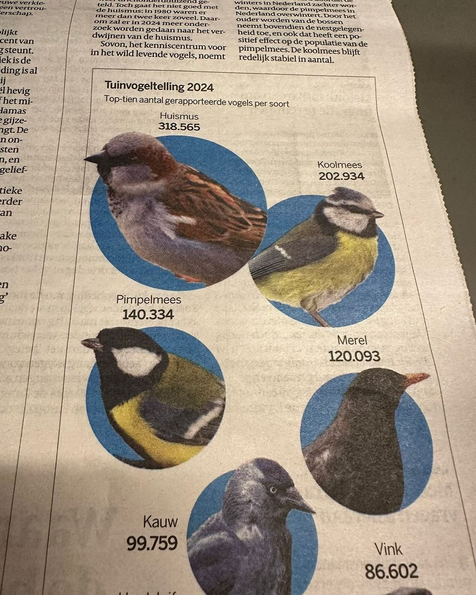

Koolmees en pimpelmees omgewisseld
31 januari 2024 · de Volkskrant
- Op de foto
- Koolmees en pimpelmees verwisseld
- Het ging over
- Koolmees en pimpelmees

Bedankt voor de vele inzendingen! Erg goed om te zien dat zoveel mensen het al snel doorhadden. @de_volkskrant de mezen staan inderdaad omgekeerd 😉